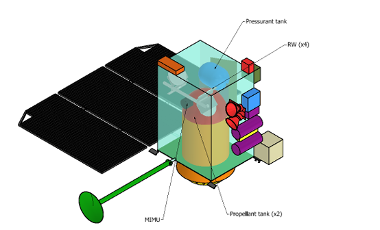
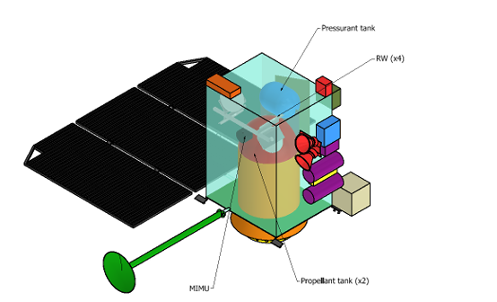

Electric Propulsion
Electric propulsion is one of my major areas of interest. For about two and a half years, I have been deeply fascinated by the idea that a motor can propel a spacecraft in deep space, along with the physical phenomena behind such engines. I initially explored this field in the "Space Propulsion" course, which provided an introduction to the various types of propulsion systems. In the "Aerothermodynamics" course, I focused on studying the flow of a Self-Field Magnetoplasmadynamic Thruster (SF-MPDT). Since May 2024, I have been working on my thesis in Munich, where I am designing a multimodal propulsion system with a particular focus on the electric propulsion system, specifically an Applied Field Magnetoplasmadynamic Thruster (AF-MPDT). During this experience, I also had the opportunity to collaborate with the University of Stuttgart, where I participated in testing the SX-3 thruster. This experience has allowed me to interact with leading experts in the field of electric propulsion and beyond.
- Plasma Flow Analysis in Magneto-Plasma Dynamic Thrusters - Aerothermodynamics
- Neutron Star Systems, Munich, Ottobrunn (MU)
- Institute of Space Systems, University of Stuttgart, Stuttgart (ST)
Abstract:The paper describes one-dimensional (1D) flow mathematical model to study the physics of fully ionized plasma flow through Magneto Plasma Dynamic Thruster (MPDT). The developed model consists of a set of differential equations obtained by coupling the Navier–Stokes equations with Maxwell’s equations. These simulations have been carried out for a special case of geometries called Tikhonov fitted geometries for alleviating the instability phenomenon commonly known as onset phenomenon in self-field MPDT. All the computations were carried out in Matlab using a higher order integration scheme.
This thesis analyzes the design of a multimodal propulsion system with a focus on the electric propulsion system (AF-MPD thruster). For this thruster, I am developing a 0D plasma-thermal model for the design of the cathode, which will be powered by hydrogen. The propellant for the multimodal system is water.
Additionally, a mission analysis code has been developed to assess the benefits of a multimodal system compared to a traditional one. The approach involves using a fuel-optimal strategy based on energy-optimal information.
Note: The work will be completed by July 2025, and no papers are available at this time. Further details can be provided during an interview.
CAD Model
View some of the CAD models I have worked on.


 
